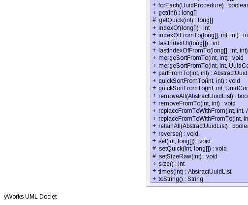

public abstract class AbstractUuidList
extends org.apache.mahout.math.list.AbstractList
|  |
| Modifier and Type | Field and Description |
|---|---|
protected int |
size
The size of the list.
|
| Modifier | Constructor and Description |
|---|---|
protected |
AbstractUuidList()
Makes this class non instantiable, but still let's others inherit from it.
|
| Modifier and Type | Method and Description |
|---|---|
void |
add(long[] element)
Appends the specified element to the end of this list.
|
void |
addAllOfFromTo(AbstractUuidList other,
int from,
int to)
Appends the part of the specified list between
from (inclusive) and
to (inclusive) to the receiver. |
void |
beforeInsert(int index,
long[] element)
Inserts the specified element before the specified position into the receiver.
|
void |
beforeInsertAllOfFromTo(int index,
AbstractUuidList other,
int from,
int to)
Inserts the part of the specified list between
otherFrom (inclusive) and
otherTo (inclusive) before the specified position into the receiver. |
protected void |
beforeInsertDummies(int index,
int length)
Inserts length dummy elements before the specified position into the receiver.
|
int |
binarySearch(long[] key)
Searches the receiver for the specified value using the binary search algorithm.
|
int |
binarySearchFromTo(long[] key,
int from,
int to)
Searches the receiver for the specified value using the binary search algorithm.
|
Object |
clone()
Returns a deep copy of the receiver.
|
boolean |
contains(long[] elem)
Returns true if the receiver contains the specified element.
|
void |
delete(long[] element)
Deletes the first element from the receiver that is identical to the specified element.
|
abstract long[] |
elements()
Returns the elements currently stored, possibly including invalid elements between size and capacity.
|
AbstractUuidList |
elements(long[] elements)
Sets the receiver's elements to be the specified array.
|
abstract void |
ensureCapacity(int minCapacity)
Ensures that the receiver can hold at least the specified number of elements without needing to
allocate new internal memory.
|
void |
fillFromToWith(int from,
int to,
long[] val)
Sets the specified range of elements in the specified array to the specified value.
|
boolean |
forEach(UuidProcedure procedure)
Applies a procedure to each element of the receiver, if any.
|
long[] |
get(int index)
Returns the element at the specified position in the receiver.
|
protected abstract long[] |
getQuick(int index)
Returns the element at the specified position in the receiver; WARNING: Does not check
preconditions.
|
int |
indexOf(long[] element)
Returns the index of the first occurrence of the specified element.
|
int |
indexOfFromTo(long[] element,
int from,
int to)
Returns the index of the first occurrence of the specified element.
|
int |
lastIndexOf(long[] element)
Returns the index of the last occurrence of the specified element.
|
int |
lastIndexOfFromTo(long[] element,
int from,
int to)
Returns the index of the last occurrence of the specified element.
|
void |
mergeSortFromTo(int from,
int to)
Sorts the specified range of the receiver into ascending order.
|
void |
mergeSortFromTo(int from,
int to,
UuidComparatorBI c)
Sorts the receiver according to the order induced by the specified comparator.
|
AbstractUuidList |
partFromTo(int from,
int to)
Returns a new list of the part of the receiver between
from, inclusive, and
to, inclusive. |
void |
quickSortFromTo(int from,
int to)
Sorts the specified range of the receiver into ascending numerical order.
|
void |
quickSortFromTo(int from,
int to,
UuidComparatorBI c)
Sorts the receiver according to the order induced by the specified comparator.
|
boolean |
removeAll(AbstractUuidList other)
Removes from the receiver all elements that are contained in the specified list.
|
void |
removeFromTo(int from,
int to)
Removes from the receiver all elements whose index is between
from, inclusive and
to, inclusive. |
void |
replaceFromToWithFrom(int from,
int to,
AbstractUuidList other,
int otherFrom)
Replaces a number of elements in the receiver with the same number of elements of another list.
|
void |
replaceFromToWithFromTo(int from,
int to,
AbstractUuidList other,
int otherFrom,
int otherTo)
Replaces the part between
from (inclusive) and
to (inclusive) with the other list's part between
otherFrom and
otherTo. |
boolean |
retainAll(AbstractUuidList other)
Retains (keeps) only the elements in the receiver that are contained in the specified other list.
|
void |
reverse()
Reverses the elements of the receiver.
|
void |
set(int index,
long[] element)
Replaces the element at the specified position in the receiver with the specified element.
|
protected abstract void |
setQuick(int index,
long[] element)
Replaces the element at the specified position in the receiver with the specified element;
WARNING: Does not check preconditions.
|
protected void |
setSizeRaw(int newSize)
Sets the size of the receiver without modifying it otherwise.
|
int |
size()
Returns the number of elements contained in the receiver.
|
AbstractUuidList |
times(int times)
Returns a list which is a concatenation of
times times the receiver. |
String |
toString()
Returns a string representation of the receiver, containing the String representation of each element.
|
protected int size
protected AbstractUuidList()
public void add(long[] element)
element - element to be appended to this list.public void addAllOfFromTo(AbstractUuidList other, int from, int to)
from (inclusive) and
to (inclusive) to the receiver.other - the list to be added to the receiver.from - the index of the first element to be appended (inclusive).to - the index of the last element to be appended (inclusive).IndexOutOfBoundsException - index is out of range ( other.size()>0 && (from<0 ||
from>to || to>=other.size()) ).public void beforeInsert(int index,
long[] element)
index - index before which the specified element is to be inserted (must be in [0,size]).element - element to be inserted.IndexOutOfBoundsException - if index < 0 || index > size().public void beforeInsertAllOfFromTo(int index,
AbstractUuidList other,
int from,
int to)
otherFrom (inclusive) and
otherTo (inclusive) before the specified position into the receiver. Shifts the element
currently at that position (if any) and any subsequent elements to the right.index - index before which to insert first element from the specified list (must be in [0,size])..other - list of which a part is to be inserted into the receiver.from - the index of the first element to be inserted (inclusive).to - the index of the last element to be inserted (inclusive).IndexOutOfBoundsException - index is out of range ( other.size()>0 && (from<0 ||
from>to || to>=other.size()) ).IndexOutOfBoundsException - if index < 0 || index > size().protected void beforeInsertDummies(int index,
int length)
beforeInsertDummies in class org.apache.mahout.math.list.AbstractListindex - index before which to insert dummy elements (must be in [0,size])..length - number of dummy elements to be inserted.IndexOutOfBoundsException - if index < 0 || index > size().public int binarySearch(long[] key)
key - the value to be searched for.Arrayspublic int binarySearchFromTo(long[] key,
int from,
int to)
key - the value to be searched for.from - the leftmost search position, inclusive.to - the rightmost search position, inclusive.Arrayspublic Object clone()
clone in class org.apache.mahout.math.PersistentObjectpublic boolean contains(long[] elem)
element - element whose presence in the receiver is to be tested.public void delete(long[] element)
element - the element to be deleted.public abstract long[] elements()
public AbstractUuidList elements(long[] elements)
elements - the new elements to be stored.public abstract void ensureCapacity(int minCapacity)
minCapacity - the desired minimum capacity.public void fillFromToWith(int from,
int to,
long[] val)
from - the index of the first element (inclusive) to be filled with the specified value.to - the index of the last element (inclusive) to be filled with the specified value.val - the value to be stored in the specified elements of the receiver.public boolean forEach(UuidProcedure procedure)
procedure - the procedure to be applied. Stops iteration if the procedure returns false,
otherwise continues.public long[] get(int index)
index - index of element to return.IndexOutOfBoundsException - index is out of range (index < 0 || index >= size()).protected abstract long[] getQuick(int index)
index - index of element to return.public int indexOf(long[] element)
-1 if the receiver does not contain this element.element - the element to be searched for.-1 if
the element is not found.public int indexOfFromTo(long[] element,
int from,
int to)
-1 if the receiver does not contain this element. Searches between
from, inclusive and
to, inclusive. Tests for identity.element - element to search for.from - the leftmost search position, inclusive.to - the rightmost search position, inclusive.-1 if
the element is not found.IndexOutOfBoundsException - index is out of range ( size()>0 && (from<0 ||
from>to || to>=size()) ).public int lastIndexOf(long[] element)
-1 if the receiver does not contain this element.element - the element to be searched for.-1 if the
element is not found.public int lastIndexOfFromTo(long[] element,
int from,
int to)
-1 if the receiver does not contain this element. Searches beginning at
to, inclusive until
from, inclusive. Tests for identity.element - element to search for.from - the leftmost search position, inclusive.to - the rightmost search position, inclusive.-1 if the
element is not found.IndexOutOfBoundsException - index is out of range ( size()>0 && (from<0 ||
from>to || to>=size()) ).public void mergeSortFromTo(int from,
int to)
You should never call this method unless you are sure that this particular sorting algorithm is the right one for your data set. It is generally better to call sort() or sortFromTo(...) instead, because those methods automatically choose the best sorting algorithm.
mergeSortFromTo in class org.apache.mahout.math.list.AbstractListfrom - the index of the first element (inclusive) to be sorted.to - the index of the last element (inclusive) to be sorted.IndexOutOfBoundsException - index is out of range ( size()>0 && (from<0 ||
from>to || to>=size()) ).public void mergeSortFromTo(int from,
int to,
UuidComparatorBI c)
This sort is guaranteed to be stable: equal elements will not be reordered as a result of the sort.
The sorting algorithm is a modified mergesort (in which the merge is omitted if the highest element in the low sublist is less than the lowest element in the high sublist). This algorithm offers guaranteed n*log(n) performance, and can approach linear performance on nearly sorted lists.
from - the index of the first element (inclusive) to be sorted.to - the index of the last element (inclusive) to be sorted.c - the comparator to determine the order of the receiver.ClassCastException - if the array contains elements that are not mutually comparable using
the specified comparator.IllegalArgumentException - if fromIndex > toIndexArrayIndexOutOfBoundsException - if fromIndex < 0 or toIndex > a.lengthIndexOutOfBoundsException - index is out of range ( size()>0 && (from<0 ||
from>to || to>=size()) ).Comparatorpublic AbstractUuidList partFromTo(int from, int to)
from, inclusive, and
to, inclusive.from - the index of the first element (inclusive).to - the index of the last element (inclusive).IndexOutOfBoundsException - index is out of range ( size()>0 && (from<0 ||
from>to || to>=size()) ).public void quickSortFromTo(int from,
int to)
You should never call this method unless you are sure that this particular sorting algorithm is the right one for your data set. It is generally better to call sort() or sortFromTo(...) instead, because those methods automatically choose the best sorting algorithm.
quickSortFromTo in class org.apache.mahout.math.list.AbstractListfrom - the index of the first element (inclusive) to be sorted.to - the index of the last element (inclusive) to be sorted.IndexOutOfBoundsException - index is out of range ( size()>0 && (from<0 ||
from>to || to>=size()) ).public void quickSortFromTo(int from,
int to,
UuidComparatorBI c)
The sorting algorithm is a tuned quicksort, adapted from Jon L. Bentley and M. Douglas McIlroy's "Engineering a Sort Function", Software-Practice and Experience, Vol. 23(11) P. 1249-1265 (November 1993). This algorithm offers n*log(n) performance on many data sets that cause other quicksorts to degrade to quadratic performance.
from - the index of the first element (inclusive) to be sorted.to - the index of the last element (inclusive) to be sorted.c - the comparator to determine the order of the receiver.ClassCastException - if the array contains elements that are not mutually comparable using
the specified comparator.IllegalArgumentException - if fromIndex > toIndexArrayIndexOutOfBoundsException - if fromIndex < 0 or toIndex > a.lengthIndexOutOfBoundsException - index is out of range ( size()>0 && (from<0 ||
from>to || to>=size()) ).Comparatorpublic boolean removeAll(AbstractUuidList other)
other - the other list.true if the receiver changed as a result of the call.public void removeFromTo(int from,
int to)
from, inclusive and
to, inclusive. Shifts any succeeding elements to the left (reduces their index). This call
shortens the list by (to - from + 1) elements.removeFromTo in class org.apache.mahout.math.list.AbstractListfrom - index of first element to be removed.to - index of last element to be removed.IndexOutOfBoundsException - index is out of range ( size()>0 && (from<0 ||
from>to || to>=size()) ).public void replaceFromToWithFrom(int from,
int to,
AbstractUuidList other,
int otherFrom)
from (inclusive) and
to (inclusive), with elements of
other, starting from
otherFrom (inclusive).from - the position of the first element to be replaced in the receiverto - the position of the last element to be replaced in the receiverother - list holding elements to be copied into the receiver.otherFrom - position of first element within other list to be copied.public void replaceFromToWithFromTo(int from,
int to,
AbstractUuidList other,
int otherFrom,
int otherTo)
from (inclusive) and
to (inclusive) with the other list's part between
otherFrom and
otherTo. Powerful (and tricky) method! Both parts need not be of the same size (part A can
both be smaller or larger than part B). Parts may overlap. Receiver and other list may (but most not)
be identical. If
from > to, then inserts other part before
from.from - the first element of the receiver (inclusive)to - the last element of the receiver (inclusive)other - the other list (may be identical with receiver)otherFrom - the first element of the other list (inclusive)otherTo - the last element of the other list (inclusive)
Examples:
a=[0, 1, 2, 3, 4, 5, 6, 7] b=[50, 60, 70, 80, 90] a.R(...)=a.replaceFromToWithFromTo(...) a.R(3,5,b,0,4)-->[0, 1, 2, 50, 60, 70, 80, 90, 6, 7] a.R(1,6,b,0,4)-->[0, 50, 60, 70, 80, 90, 7] a.R(0,6,b,0,4)-->[50, 60, 70, 80, 90, 7] a.R(3,5,b,1,2)-->[0, 1, 2, 60, 70, 6, 7] a.R(1,6,b,1,2)-->[0, 60, 70, 7] a.R(0,6,b,1,2)-->[60, 70, 7] a.R(5,3,b,0,4)-->[0, 1, 2, 3, 4, 50, 60, 70, 80, 90, 5, 6, 7] a.R(5,0,b,0,4)-->[0, 1, 2, 3, 4, 50, 60, 70, 80, 90, 5, 6, 7] a.R(5,3,b,1,2)-->[0, 1, 2, 3, 4, 60, 70, 5, 6, 7] a.R(5,0,b,1,2)-->[0, 1, 2, 3, 4, 60, 70, 5, 6, 7] Extreme cases: a.R(5,3,b,0,0)-->[0, 1, 2, 3, 4, 50, 5, 6, 7] a.R(5,3,b,4,4)-->[0, 1, 2, 3, 4, 90, 5, 6, 7] a.R(3,5,a,0,1)-->[0, 1, 2, 0, 1, 6, 7] a.R(3,5,a,3,5)-->[0, 1, 2, 3, 4, 5, 6, 7] a.R(3,5,a,4,4)-->[0, 1, 2, 4, 6, 7] a.R(5,3,a,0,4)-->[0, 1, 2, 3, 4, 0, 1, 2, 3, 4, 5, 6, 7] a.R(0,-1,b,0,4)-->[50, 60, 70, 80, 90, 0, 1, 2, 3, 4, 5, 6, 7] a.R(0,-1,a,0,4)-->[0, 1, 2, 3, 4, 0, 1, 2, 3, 4, 5, 6, 7] a.R(8,0,a,0,4)-->[0, 1, 2, 3, 4, 5, 6, 7, 0, 1, 2, 3, 4]
public boolean retainAll(AbstractUuidList other)
other - the other list to test against.true if the receiver changed as a result of the call.public void reverse()
reverse in class org.apache.mahout.math.list.AbstractListpublic void set(int index,
long[] element)
index - index of element to replace.element - element to be stored at the specified position.IndexOutOfBoundsException - if index < 0 || index >= size().protected abstract void setQuick(int index,
long[] element)
index - index of element to replace.element - element to be stored at the specified position.protected void setSizeRaw(int newSize)
public int size()
size in class org.apache.mahout.math.list.AbstractListpublic AbstractUuidList times(int times)
times times the receiver.times - the number of times the receiver shall be copied.Copyright © 2013 International Health Terminology Standards Development Organisation. All rights reserved.